Bio
I am an M.Phil. student in Computer Science at City University of Hong Kong, supervised by Prof. Shiqi Wang. Prior to joining CityU, I received my bachelor's degree from Northeast Electric Power University in Jilin, China, under the supervision of Prof. Yimin Hou, Prof. Jinglei Lv, and Prof. Yang Li.
Graph Neural Network (GNN) Natural Language Processing (NLP) Computer Vision (CV) Tutorials and Useful Coding Scripts Other Resources Good Articles
During my studies, I interned at the Computer Vision team of Samsung Research in Beijing, advised by Dr. Hui Zhang, and the Medical Natural Language Processing team of Philips Research in Shanghai, advised by Dr. Shuang Zhou. I was also a developer intern at Tencent. In the summer of 2017, I attended a summer school at University of California, Irvine in the United States.
I put all my effort into AI Foundation Models, e.g., Pre-trained Language Models (PLMs), and Computer Vision. Some of my presentations and resources can be found
here
Email: shuyuej@ieee.org
Scholar
GitHub
News
- Mar 2023 A Presentation of Foundation Models for Sequential Decision Making.
- Jan 2023 A Presentation of IQA Regression and EEG Classification.
- Nov 2022 Samsung Intern Research Proposal of Video Panoptic Segmentation (VPS).
- Aug 2022 One Paper GCNs-Net accepted by IEEE T-NNLS .
- Aug 2022 One Paper NLNet accepted by IEEE MMSP .
- Dec 2021 One Paper BiLSTM-GCNs accepted by Frontiers in Bioengineering and Biotechnology.
- Apr 2020 Open Source EEG-DL, a Deep Learning (DL) library written by TensorFlow for EEG Signals Classification .
- Feb 2020 One Paper ESI-CNNs accepted by Journal of Neural Engineering .
Publications
2023
-
PMU Measurements based Short-term Voltage Stability Assessment of Power Systems via Deep Transfer Learning
Shitu Zhang, Meng Zhang, Yang Li, Jiting Cao, Shuyue Jia
IEEE Transactions on Instrumentation and Measurement (IEEE T-IM)
Under Review -
Learning from Mixed Datasets: A Monotonic Image Quality Assessment Model
Zhaopeng Feng, Keyang Zhang, Shuyue Jia, Baoliang Chen, Shiqi Wang
IET Electronics Letters
2022
-
No-reference Image Quality Assessment via Non-local Dependency Modeling
Shuyue Jia, Baoliang Chen, Dingquan Li, Shiqi Wang
IEEE 24th International Workshop on Multimedia Signal Processing (IEEE MMSP'22)See More
-
A no-reference image quality assessment method based on non-local features learned by a graph neural network (GNN). The proposed quality assessment framework is rooted in the view that the human visual system perceives image quality with long-dependency constructed among different regions, inspiring us to explore the non-local interactions in quality prediction.

-
GCNs-Net: A Graph Convolutional Neural Network Approach for Decoding Time-resolved EEG Motor Imagery SignalsShuyue Jia, Yimin Hou, Xiangmin Lun, Ziqian Hao, Yan Shi, Yang Li, Rui Zeng, Jinglei Lv
IEEE Transactions on Neural Networks and Learning Systems (IEEE T-NNLS)
See More
-
Traditional works classify EEG signals without considering the topological relationship among electrodes. Thus, a graph convolutional neural network is presented while cooperating with the functional topological relationship of electrodes.
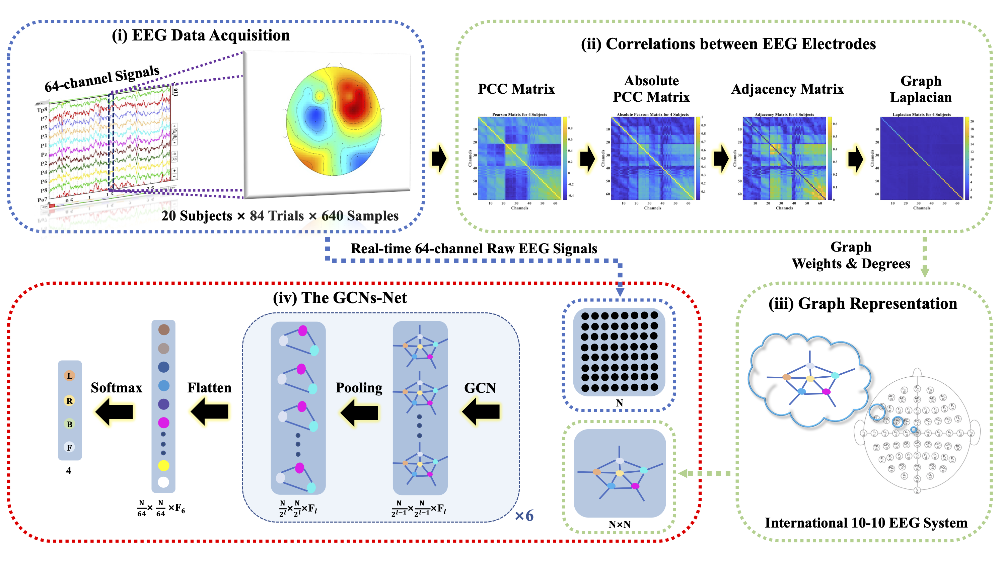
2021
-
Deep Feature Mining via Attention-based BiLSTM-GCN for Human Motor Imagery Recognition
Yimin Hou, Shuyue Jia *, Xiangmin Lun, Shu Zhang, Tao Chen, Fang Wang, Jinglei Lv
Frontiers in Bioengineering and BiotechnologySee More
-
This paper presents a novel deep learning approach designed toward both remarkably accurate and responsive motor imagery (MI) recognition based on scalp EEG. Bidirectional long short-term memory (BiLSTM) with the attention mechanism is employed, and the graph convolutional neural network (GCN) promotes the decoding performance by cooperating with the topological structure of features.
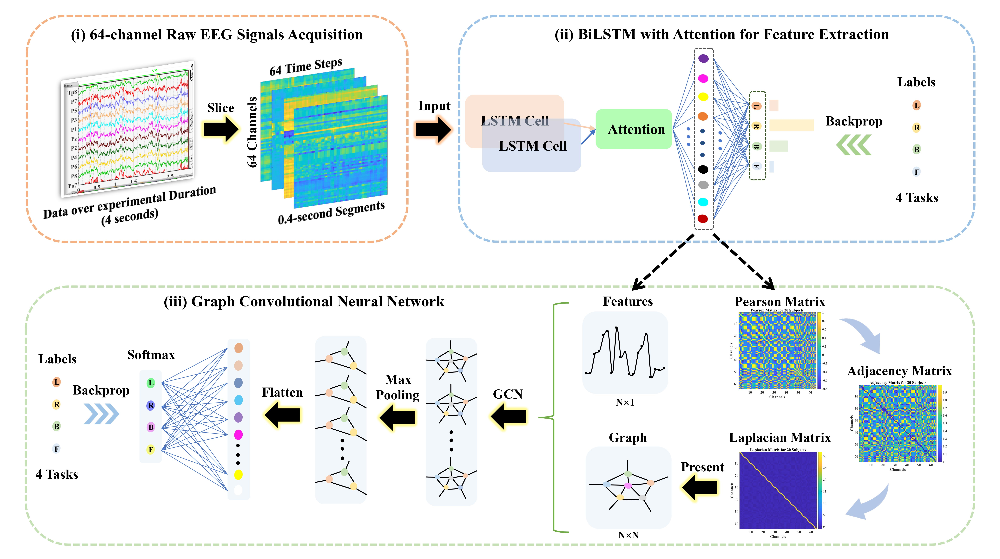 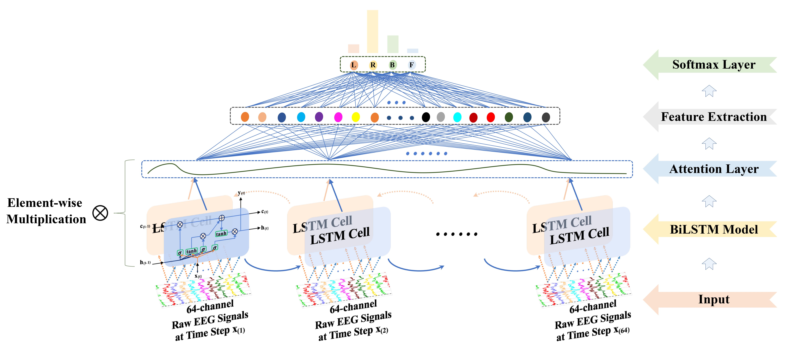 -
Improving Performance: A Collaborative Strategy for the Multi-data Fusion of Electronic Nose and Hyperspectral to Track the Quality Difference of Rice
Yan Shi, Hangcheng Yuan, Chenao Xiong, Shuyue Jia, Jingjing Liu, Hong Men
Sensors & Actuators: B. Chemical
2020
-
A Novel Approach of Decoding EEG Four-Class Motor Imagery Tasks via Scout ESI and CNN
Yimin Hou, Lu Zhou, Shuyue Jia, Xiangmin Lun
Journal of Neural EngineeringSee More
-
We presented a novel approach that could potentially improve the current stroke rehabilitation strategies by implementing a deep learning approach for an Electroencephalogram (EEG) based on MI Brain-Computer Interface System.
- Constructed 6 convolutional layers, 2 max-pooling layers, and 3 FC layers CNNs for four-class motor imagery classification through TensorFlow, with 50% dropout (spatial dropout after every Conv layer and regular dropout for FC layers) – 11.44% accuracy improvement, batch normalization (BN) – 10.15% improvement, and Short-cut Connection – 1.76% improvement to prevent overfitting, and achieved SOTA results: 94.50% accuracy on scout R5, 94.54% at subject level, and 96% for left fist prediction.
- Took charge of DNNs design, including methods comparisons, such as MLPs, CNNs, RNNs, and LSTMs, classification results calculations, and programming. 10 and 14 subjects’ data were utilized (19,320 and 27,048 samples in the experiments)
- Benchmark Dataset: EEG Motor Movement/Imagery Dataset.
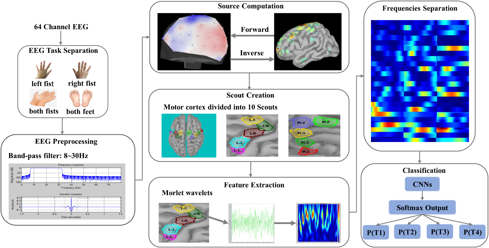 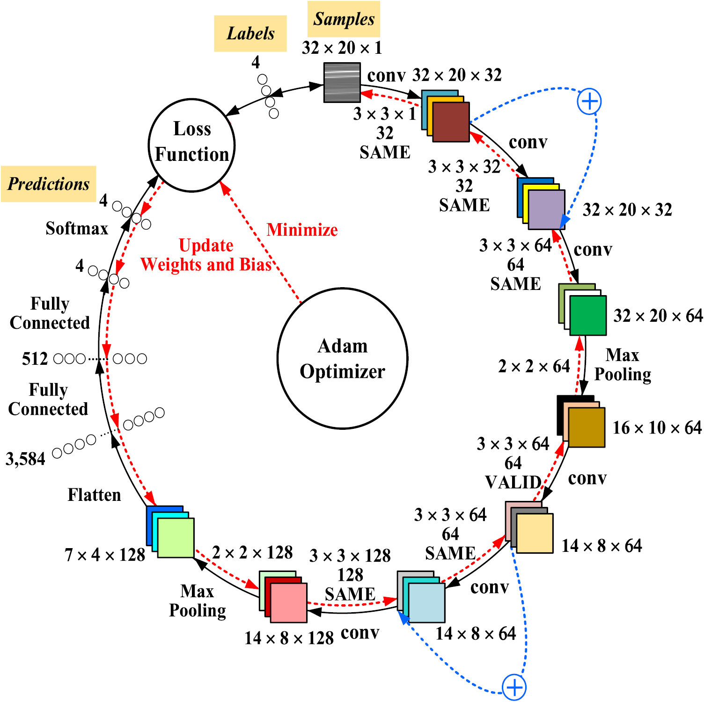
- * denotes the Corresponding Author.
Academic Services
- Reviewer of IEEE T-MM, IEEE T-CSVT, and IEEE Journal of Biomedical and Health Informatics
- Student Member of IEEE, ACM, ACM SIGAI and SIGMM, ACL, AAAI, and AAAS
Selected Awards
-
2019 Interdisciplinary Contest In Modeling
Honorable Mention

-
2018 Mathematical Contest In Modeling, Jilin, China
First Prize

-
Excellent Student Scholarship (2016 ~ 2020) and Innovation Scholarship (2018, 2019)
Awards
-
2015 National High School Math League, China
Second Prize
-
The 32nd Chinese Physics Olympiad (CPhO)
Third Prize
-
Standard Chartered Hong Kong Marathon
Half Marathon Race (2021)
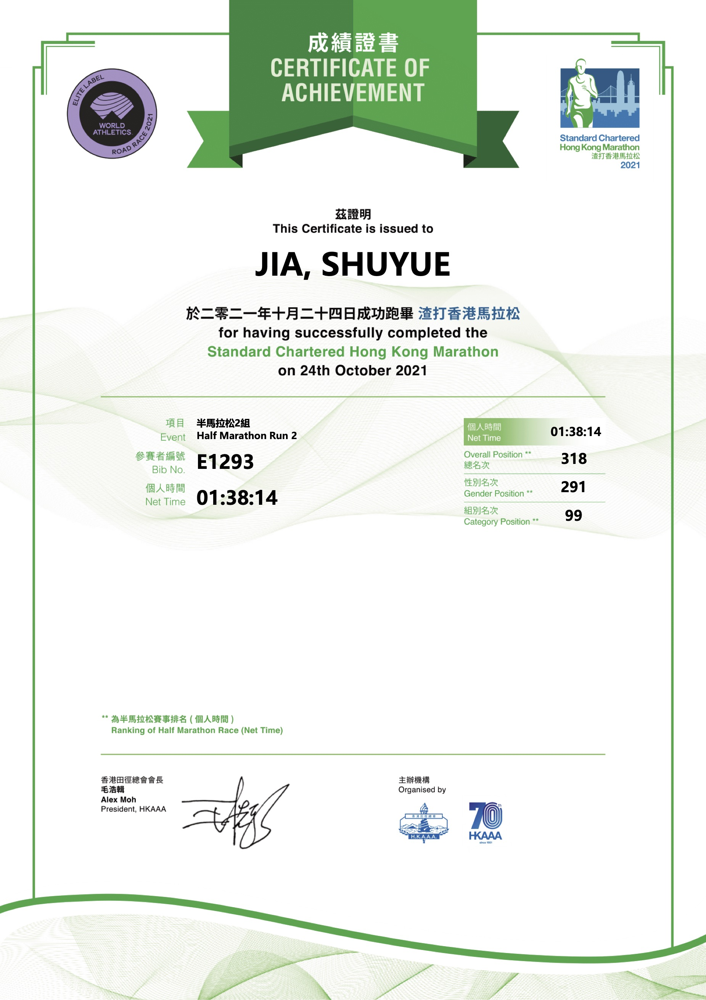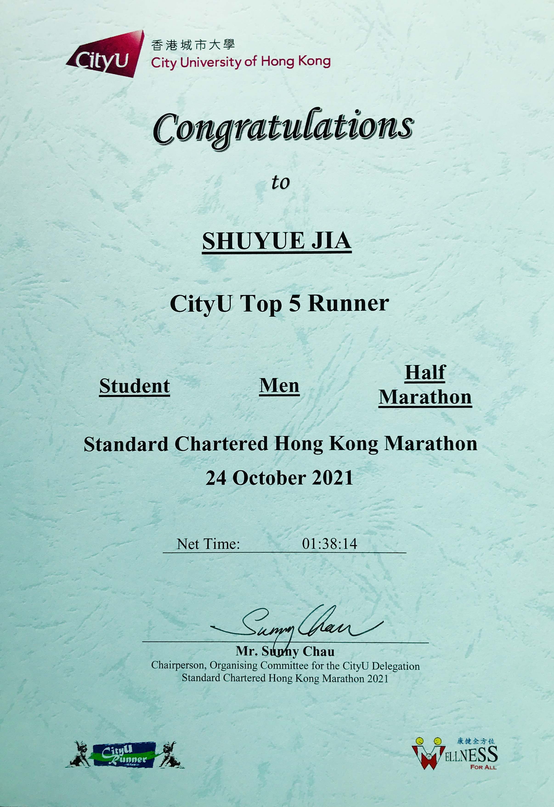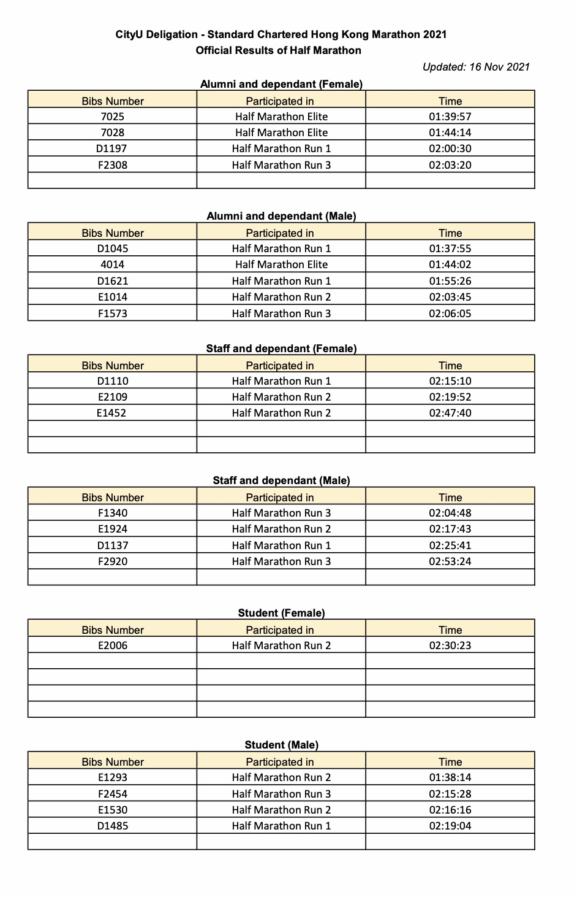Full Marathon Race (2022)
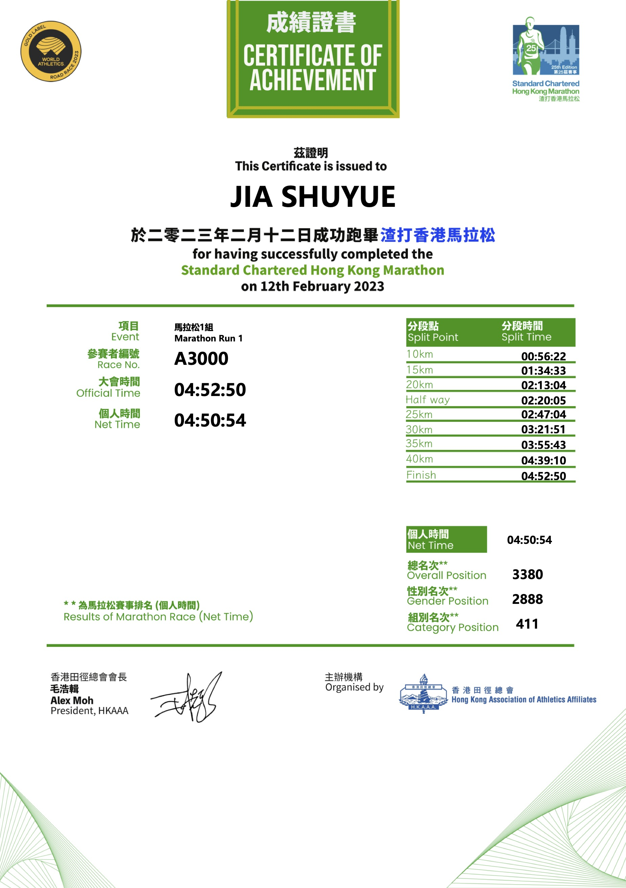 -
National Marathon Championships (Jilin City Station)
Half Marathon Race (2017)
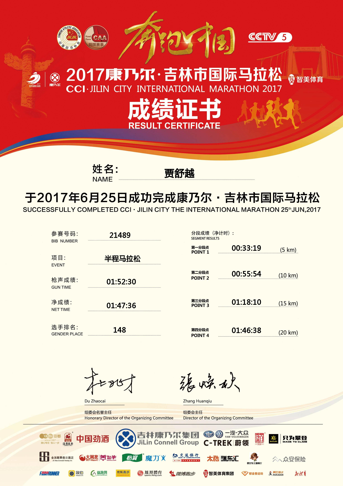Full Marathon Race (2018)
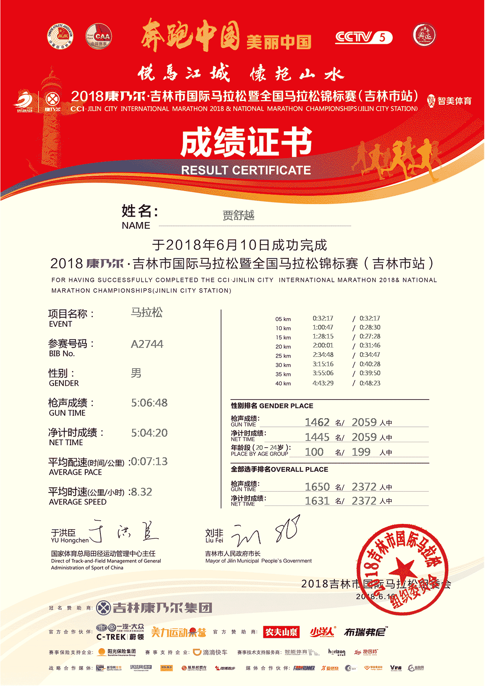 -
3000-meter Steeplechase, The 45th Northeast Electric Power University Games
The Seventh Place in college
-
Elite Athlete, School of Automation Engineering, Northeast Electric Power University
Athlete